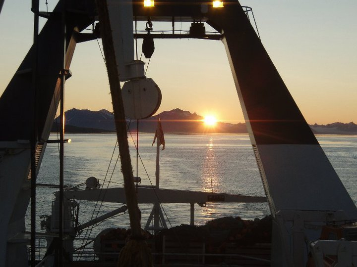
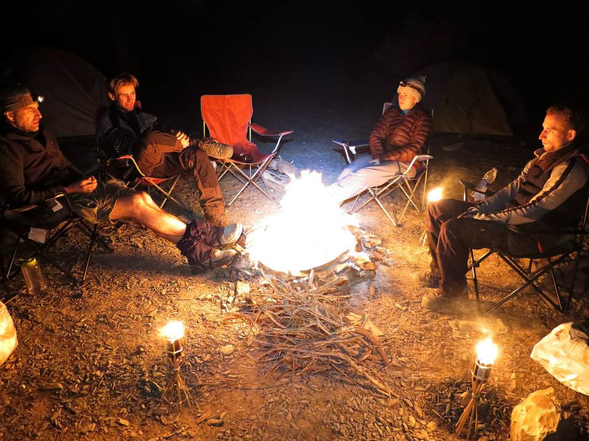

Are you interested in Earth history research? We are looking to recruit motivated graduate students to join the Earth history group, starting in the Fall semester 2023! To apply, please reach out to Dr. Ahm in advance to discuss opportunities for both Masters and PhD projects. Also, in advance please check out ongoing research projects (here) to make sure our research interest align. There are no fixed deadlines in applying for admission to the School of Earth and Ocean Sciences at UVic, but there are three official entry points for admission: January, May and September. The Faculty of Graduate Studies indicate that applications should be submitted as early as possible and that no assurance can be given that domestic applications received after May 31 or international applications received after December 15 can be processed in time to permit registration in the following Winter Session (Fall term).
We do not have allocated funding to hire postdoctoral researchers, but there are opportunities to apply for independent fellowships through different federal agencies in Canada. If you are interested in pursuing postdoctoral research in the Earth history Group please reach out, and we can discuss research projects and funding opportunities.